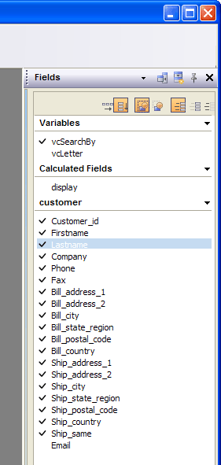

Using Dockable Task Panels
Dockable task panels appear when you open different editors. Task panels can be thought of as 'windows' which contain task panes. A task panel can contain multiple task panes. By clicking on the caption (which causes a drop down menu to appear), you can select which task pane appears in the panel. By splitting the task panel vertically, you can see multiple task panes at once.
Right-click on the caption, or click on the 'properties' icon for options.
A user may:
close the panel
-
dock the panel on the opposite screen side
split a panel vertically so that it can display multiple panes (e.g. the Toolbox and the Field Drag & Drop list in the case of a Layout editor)
-
drag a pane off the panel so that it is floating
-
drag a pane to a panel that is docked on the opposite side of the screen
un-pin a panel so that when it is not in use, it collapses into a narrow bar on the side of the screen.
-
pin a panel so that when it is not in use, it remains open (i.e. it does not collapse into a narrow bar on the side of the screen)
When a panel is un-pinned, and is shown as a narrow bar on the side of the screen, a tab is shown for each pane in the panel. Holding the mouse over the tab will cause the panel to appear with the corresponding pane visible in the panel. If, instead of holding the mouse over the tab button, you actually click the tab button, the panel is shown and is also pinned (so that it stays open when not in use).
The Field Drag & Drop List task pane has several icons in it. These are explained below:
Field Drag & Drop List Pane
|
Function |
Button |
Description |
|
Places titles above fields |
Only applicable if the Field and Label mode is enabled. | |
|
Places titles to the left of fields |
Only applicable if the Field and Label mode is enabled. | |
|
Groups field and label |
Only applicable if the Field and Label mode is enabled. | |
|
Un-groups field and label |
Only applicable if the Field and Label mode is enabled. | |
|
Field and Label |
When you drag a field onto a layout, you will place the field label with the field. | |
|
Field Only |
When you drag a field onto a layout, you will place the field only. | |
|
Label Only |
When you drag a field onto a layout, you will place the label only. |
This picture shows the Fields panel that appears when you open the Form Editor.

This picture shows four Code Editor panels separated into four floating toolbars.

This picture shows four panels tiled vertically.

This picture shows four panels shown above but collapsed to the right edge of the window.

Limitations
Desktop applications only.
See Also